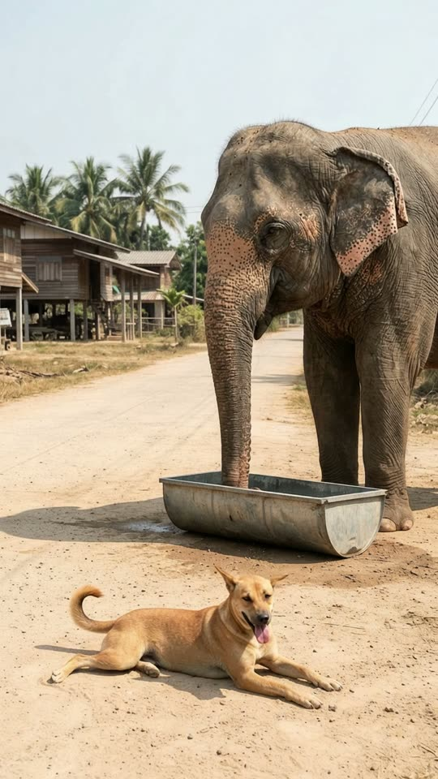
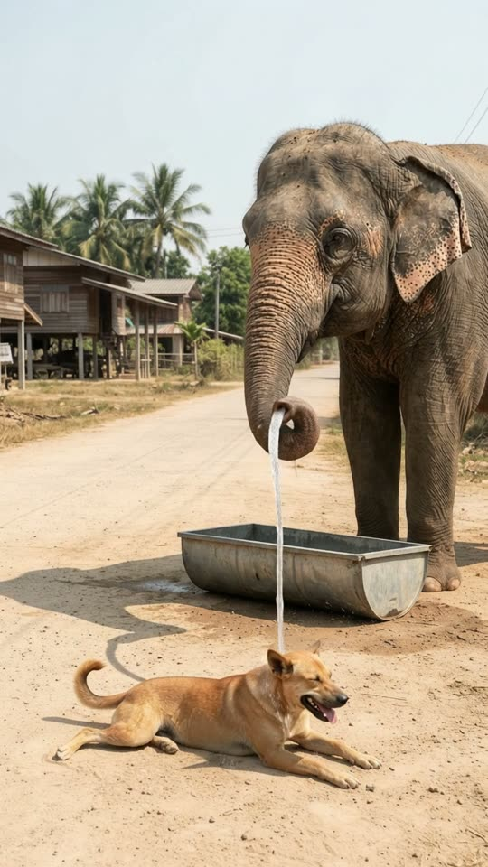
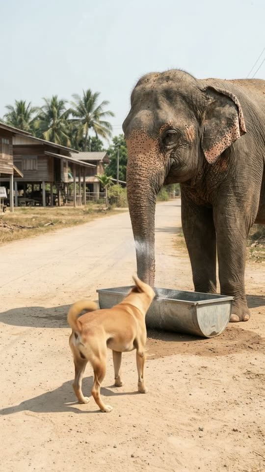
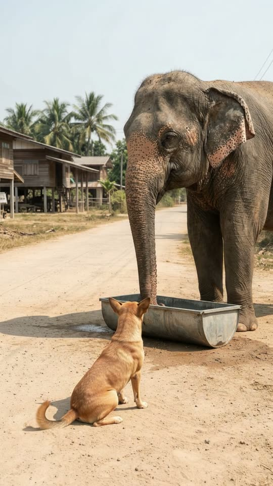

Free prompt pack
He was melting.She had a trunk full of water.
A stray dog lies panting on a hot village road. An elephant takes a long drink from her trough and gives him a gentle shower. He loves it. Then he stands up and shakes it all off, right in her face. One still image and one prompt, in one take.
Both prompts, in the order I ran them. Hold and aim the trunk to keep the water on the dog and reveal each prompt. Tap the road to splash it.
The first frame
The trunk is already in the trough. This image is frame one: an Asian elephant at a battered metal trough on a dusty village road at midday, and a tan stray dog lying panting in the sun in front of it.
Watch out
Give the water somewhere to come from. With the trunk already in the trough, the shower has a cause the model can see.

The prompt 125 words
Real photo taken with a long lens at midday on a dusty dirt road in a Thai village, harsh sun. An Asian elephant stands on the right, seen from the side and slightly in front, the tip of its trunk dipped into a battered metal water trough at the edge of the road: grey wrinkled skin with pink freckles on its trunk and ears, small ears, a few coarse hairs on its head, an amber eye. In front of it, lying flat in the hot dust in full sun, a tan short-haired street dog pants with its tongue out, its curled tail resting on the ground. Palm trees, a wooden house on stilts and a pale hazy sky behind. Short shadows, natural colour, sharp detail.
Drink, spray, shake
Ten seconds, locked off from the road. Add the image as the reference, set 10 s, 9:16, 720p and audio on, and paste the prompt whole. This is the second version.
- 0–1.5 sa long drink
- 1.5–4.5 sthe shower
- 5.5–7.5 sthe shake
- 7.5–10 swet face
Watch out
Say where the water lands. My first try had a gentle stream and no target, so it poured straight onto the ground. 'Strong enough to fly 1.5 m and land on the dog' fixed it.
Fragments



The prompt 1188 words
FORMAT Real video filmed with a long lens from a village road, seen as the finished exported video file: the full picture edge to edge, nothing on top of it. Whatever records the picture is never in frame. One continuous take in real time, no cuts. Vertical frame. The video runs at 24 fps. No frame is repeated. Real time, 1x speed, never slow motion. SCENE On a hot dusty road, a stray dog lies panting in the sun in front of an elephant's water trough. The elephant sucks water from the trough, lifts its trunk and sprays the dog: an arc of water flies over the trough and soaks the dog's back and head; the dog closes its eyes and thumps its tail. Then the dog stands up and shakes itself dry, right at the elephant, and the water flies all over the elephant's face. The elephant blinks and flaps its ears. The elephant's trunk is already in the trough in the first frame. The take ends with the dog sitting in front of the trough, wagging, and drops running down the elephant's face. REFERENCE IMAGE Use it for the elephant, the dog, the trough, the road, the houses, the palm trees and the light, and for where each of them is: the elephant faces us, the trough lies across the road in front of its front feet, and the dog lies in the dust in front of the trough, closer to us, exactly as in the image. Everything matches it exactly, zero drift, no smoothing. The movement is described below. THE ELEPHANT One real Asian elephant, facing us: grey wrinkled skin with pink freckles on its trunk and ears, small ears, a few coarse hairs on its head, an amber eye with long lashes. It stands in the same spot behind the trough the whole take; only its trunk, ears, eyes and head move. It moves like a real elephant: slow, heavy, careful; its trunk curls and points precisely. THE DOG One real tan short-haired street dog, medium size, with a curled tail, upright ears and a dark muzzle. It moves like a real dog: panting, tail thumping, then a full-body shake that starts at the head and rolls down to the tail. THE WATER The elephant sucks up water from the trough: the trunk swells slightly. It blows it out of the tip of its trunk as one steady arc of water, like a garden hose held up high, strong enough to fly 1.5 m forward over the trough and land on the dog. The water from the trunk lands on the dog, never on the ground beside it, never back in the trough. It is never a burst and never a mist that hides anything. The dog's tan fur turns dark and wet where it lands, and the water runs off it into the dust. The dog's shake throws off a spray of droplets that flies about one metre, onto the elephant's face. LOCATION MAP We stand on the road 10 m in front of the elephant, at standing height. The elephant stands in the middle of the frame, facing us. A battered metal trough lies across the road right in front of its front feet. The dog lies in the dust just in front of the trough, between the trough and us, about 1.5 m from the elephant's trunk, its head toward frame-right. Behind: palm trees, wooden houses on stilts, a pale hazy sky. FIRST FRAME The elephant's head at x 45-95%, y 15-45%, its body behind it to the right edge; the tip of its trunk in the trough at x 50-60%, y 52-62%; the trough across x 36-88%, y 60-70%; the dog lying at x 10-78%, y 73-92%, its head at x 55-68%, y 73-83%, tongue out; the houses and palms at y 20-45% on the left. Instant read: an elephant at its trough with a hot, panting dog lying in front of it. No delayed reveal. CAMERA Locked off: a still frame with only the faintest natural movement of a long lens. It never pans, never zooms, never cuts, never moves closer. ACTION TIMING 0–1.5 s — The elephant sucks water from the trough, its trunk swelling slightly, then lifts its trunk out, dripping, raises it and curls the tip forward over the trough, pointing it at the dog; the dog pants in the sun. 1.5–4.5 s — The elephant blows a steady arc of water from the tip of its trunk; the arc flies over the trough and lands on the dog's back, then moves slowly along to its neck and head; the dog's fur turns dark and wet, water runs off into the dust; the dog closes its eyes and its tail thumps the ground. 4.5–5.5 s — The water stops; the elephant curls the tip of its trunk up. 5.5–7.5 s — The dog stands up, steps to the edge of the trough facing the elephant and shakes itself hard from head to tail; a spray of droplets flies up off its fur onto the elephant's face and trunk. 7.5–10 s — The elephant blinks slowly and flaps its ears once, drops running down its face; the dog sits down in front of the trough and looks up at it, wagging. Hold to the last frame. PHYSICS AND SCALE Real size: the elephant is about 2.7 m tall at the shoulder, the dog about 50 cm, the trough about 1.5 m long. The arc of water is narrow and falls in a real curve onto the dog; the drops fall at real speed and the wet fur clumps. One elephant, one dog, one trough. Nothing morphs. NO FULL-FRAME EVENTS Nothing fills the frame: the water is one thin arc and one small spray; the elephant, the dog and the road stay visible in every frame. The picture never goes white or misty. LIGHTING Harsh midday sun from above and slightly from frame-right: short shadows, bright dust, glistening wet fur and wet elephant skin; sunlight sparkling in the water. AUDIO No music, no score, no narration, no subtitles. Village midday sounds: insects, distant birds, the slurp of the trunk in the trough, the hiss of the arc of water and its patter on the dog's fur, the dog's panting, the flap of the dog's ears as it shakes, a soft low rumble from the elephant. No words. LOOK Real documentary footage shot on a long lens, seen as the finished exported file: crisp skin and fur detail, natural colour, no film grain, no lens flare, no slow motion, never CGI, never a cartoon. No camera app interface: no shutter button, no gallery thumbnail, no record button, no icons, no timer, no recording dot, no frame lines. POSITIVE LOCKS One elephant, one dog, one trough. The elephant never leaves its spot. The water from the trunk lands on the dog. No people, no vehicles. No captions, no subtitles, no on-screen text, no watermark, no logos, nothing on top of the picture. ONE ELEPHANT. ONE DOG. THE WATER HITS THE DOG. NO CUTS. NO ZOOM. NO SLOW MOTION. NO MUSIC.
Rule 01
A kindness and a payback
She cools him down; he soaks her face. The twist everyone recognises is the one that gets shared.
Rule 02
Water needs a target
Strength, distance and where it lands. Leave the landing out and the model pours it on the ground.
Rule 03
Copy the first frame
My image put the elephant facing us and the dog further away than I'd written. The prompt has to describe the picture you got.
That's the whole build
Now go coolsomeone down.
If yours works, send it over. I read every DM and the good ones end up on the account.
@martiiifons